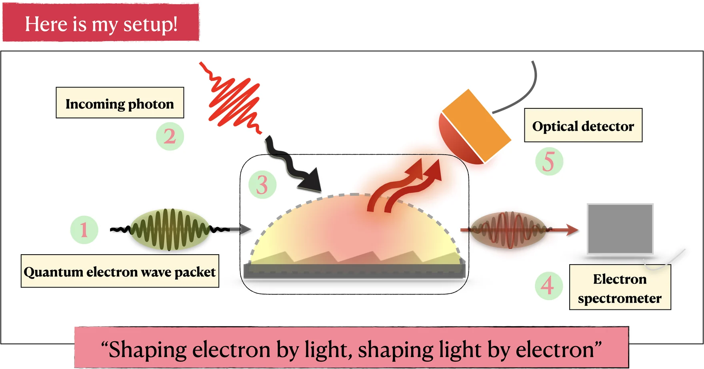
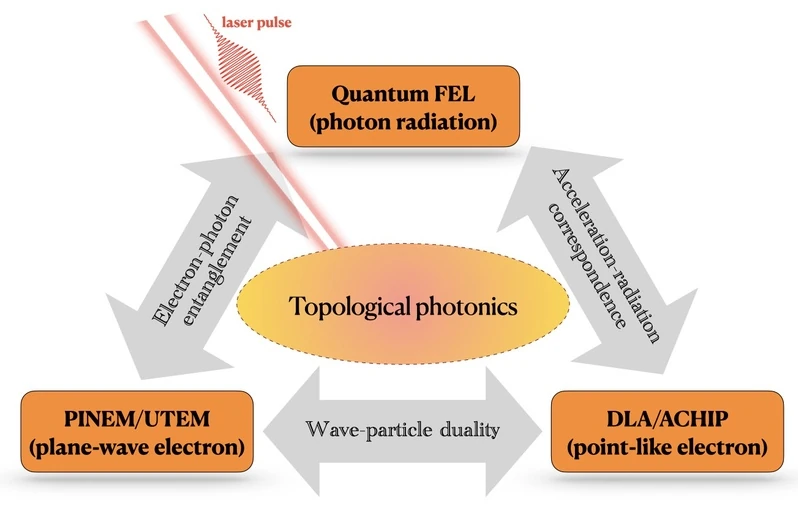
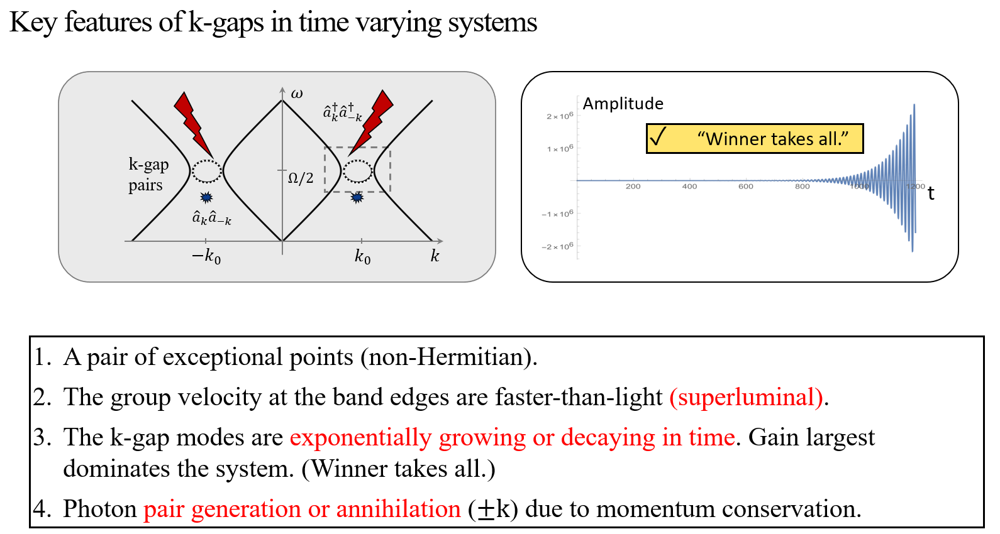
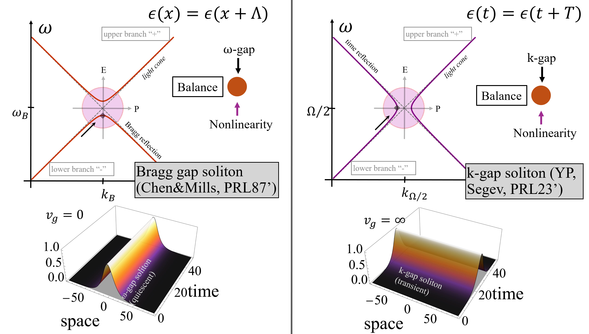
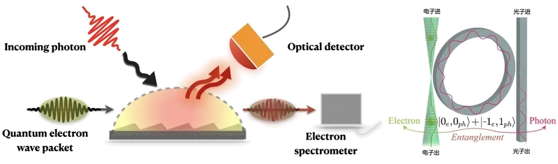

超快、强场与自由电子量子光学
激光诱导的自由电子加速(DLA)和自由电子辐射(FEL)
光子诱导的近场电子显微镜(PINEM)
阿秒动力学调控以及量子弱测量
量子，量子，还是TMD量子！强场，强场，还是TMD强场！
在强场和量子领域中，研究自由电子和光的相互作用。应用物理目标是实现电子和光场之间的能量、动量和信息的可控转移；基础物理目标是探索电磁相互作用的深层结构。
激光诱导的自由电子加速(DLA)和自由电子辐射(FEL)
光子诱导的近场电子显微镜(PINEM)
阿秒动力学调控以及量子弱测量
激光直写，等离子体激化，微波等波导中的拓扑光子学。
超快PINEM电子合成维度。拓扑Floquet时间晶体，非线性光子时间晶体。
时间调制的动量带隙孤子，次谐波产生和非线性调制不稳定性等。
Weyl半金属的手性输运，二维材料的量子输运，Weyl半金属光学行为。
在周期驱动系统中的量子反常和Callan-Harvey机制。
自由电子量子光学（QFEL、DLA、UTEM）、自由电子凝聚态物理（material-free）、光子时空晶体、量子反常、光孤子、对偶性与量子弱测量，以及神经算子和 Koopman 算子（AI4Science）。
我们关心电子本身、光本身；材料是实现相位匹配与场增强的媒介。

从演化数据、物理网络到神经算子，探索课题组正在发展的交叉方向。
“Shaping electron with light,— Ido Kaminer · Technion
shaping light with electron.”
“潘兄，会不会光就是电，电就是光？” — Zhaopin Chen · Technion
电子不只是一颗带电粒子，也是一束可以被光雕刻的量子波。我们研究超快电子与近场光的相互作用，将电子能量边带用作合成维度，探索电子加速、波函数重构、干涉与量子态调控。
从 PINEM、介质激光加速到超快电子显微镜，理论模型和实验平台共同回答一个问题：如何控制并读出光与自由电子交换的能量、动量和量子信息？

相关论文
空间周期改变能带，时间周期则打开动量带隙。我们关注时空调制、非线性与拓扑如何共同塑造光场，从增益与衰减的平衡走向局域波包和量子关联。


研究 k-gap 晶格中的 Bloch 振荡与带间干涉，探索自平衡动力学，以及动量带隙放大对固体高次谐波的影响。
在能量—动量混合带隙中研究 event soliton 与拓扑事件波包，探索非线性局域、拓扑保护和相位可控的成对湮灭。
进一步研究呼吸 k-gap 事件、孤子的量子化与双光子统计，以及有限时间晶体中的 Stokes 成对机制。以下工作目前以预印本形式公开。
量子几何张量 Q = g − (i/2)Ω 把两件事放进同一个对象：实部是量子度规，衡量相邻量子态之间的“距离”；虚部是 Berry 曲率，决定反常速度与霍尔响应。两者来自同一个量子态。
在时空晶体和时变介质里，频率和动量同样重要。我们把量子几何张量推广到四维能量–动量空间 (ω/c, k)，把频率与动量当作独立坐标，然后追问：换到一个运动的参考系，能带的几何会怎样变化？
对静态 Dirac 与 Weyl 体系做 Lorentz boost：原本只在动量方向的度规和磁性的 Berry 曲率，会生出频率度规、四极形的频率–动量剪切度规，以及类电场的 Berry 曲率。
各个分量都依赖参考系，其中一些随 γ² 增大。与 Minkowski 度规缩并后，得到五个 Lorentz 不变量；前两个满足一条量子几何不等式，各向同性的 Weyl 模型恰好取等号。
从静态 Weyl 单极子的几何和 Lorentz 协变性出发，曲率满足 Berry–Maxwell 方程，度规满足流守恒律。在 Weyl 模型中，两者由本构关系相连，并给出能量–动量空间里的 Poynting 型守恒律。
这里的“类引力度规”和“类电磁规范场”是量子态几何层面的类比，描述的是能带几何，并不涉及基本相互作用的统一。论文讨论了两条可能的实验途径：实际运动的介质，以及用行波调制的合成时空晶体。
一言以蔽之：实现并探测超快电子与超快光子之间的量子纠缠。
超快电子的产生与调控，以及不连续界面处的强场电子–光子耦合。
设计超快光电子枪，实现低能自由电子的多光子自由–自由跃迁。
平台涵盖光学、微波、声波、原子与自由电子。

结合光学探测器和直接电子探测器，实现时间关联符合测量，用于研究自由电子和光子的量子纠缠。平台搭建完成后继续优化和升级，最终走向产品化：一台可广泛使用的“超快电子量子显微镜”。